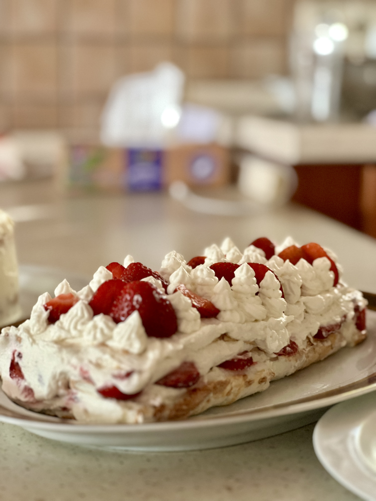

Інгрідієнти для меренги:
5 білків
цукру
Крем:
250 г маскарпоне
100 г вершків 33%
60 г цукрової пудри
Екстракт ванілі
200 г свіжої полуниці нарізаної кубиками
КРОК 1
В чашу міксера помістити білки кімнатної температури. Краще відділити білки, коли яйця холодні і залишити при кімнатній температурі.
КРОК 2
Збивати до тих пір, коли білки стануть піною. Потім збільшити швидкість міксера та почати сипати цукор дощиком.
КРОК 3
Збивати доки ввесь цукор не розчиниться. Якщо потерти між пальців меренгу не відчуваємо крупинок. Меренга повинна гарно тримати форму, бути гладенька та стабільна.
КРОК 4
Викласти на деко вистелене пергаментом та розрівняти у прямокутник. Краще не до країв форми. Зверху притрусити пелюстками мигдалю або горіхами.
КРОК 5
Випікати 30 хв при 160 °С.
КРОК 6
Перевернути на пергамент. Сторона з мигдалем у нас буде внизу.
КРОК 7
Приготувати крем. У велику миску викласти маскарпоне, вершки, цукрову пудру, ванільний екстракт. Збивати 5-7 хв. Поставити у холодильник до використання.
КРОК 8
На меренгу викласти крем та розрівняти шпателем. Частину крему можна залишити для декору. Розкласти свіжу полуницю.
КРОК 9
Обережо, допомагаючи собі пергаментом, завернути рулет і залишити в холодильнику для стабілізації на 5-8 годин.
КРОК 10
Зняти пергамент, перекласти рулет на дошку для подачі та декорувати кремом та ягодами.)
